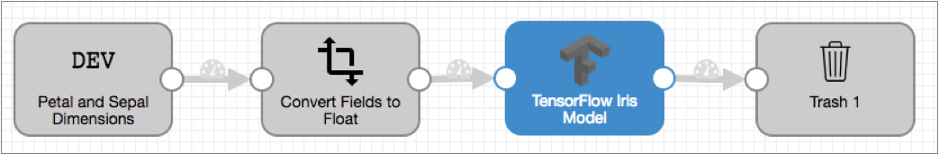
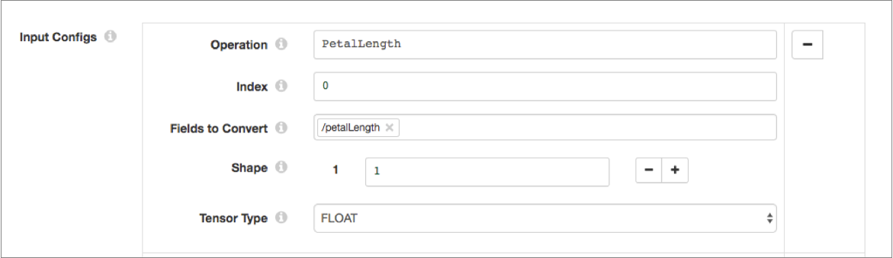
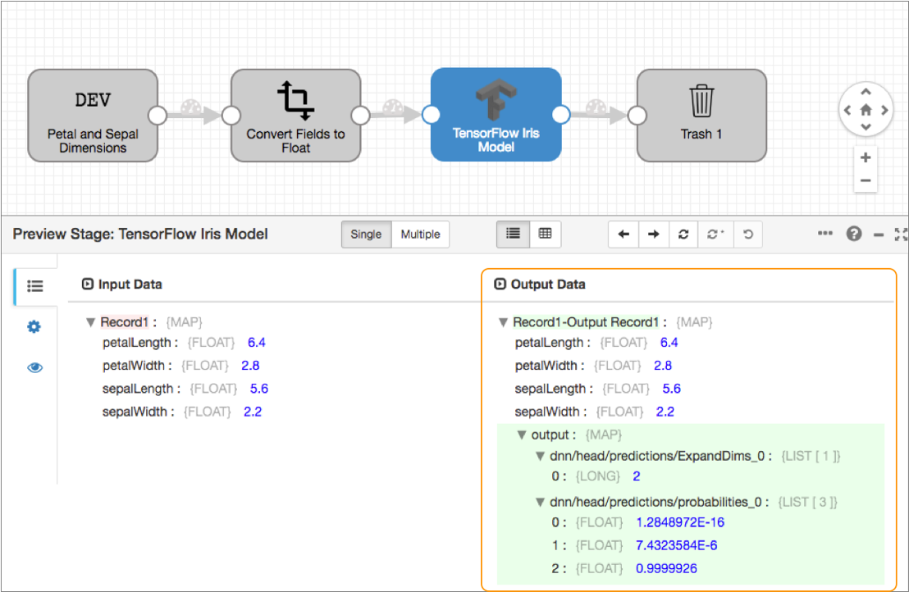

TensorFlow Evaluator
Supported pipeline types:
|
Using the TensorFlow Evaluator processor, you can design pipelines that read data and then generate predictions or classifications of the data during the pipeline processing - producing data-driven insights in real time. For example, you can design pipelines that detect fraudulent transactions or that perform natural language processing as data passes through the pipeline.
To use the TensorFlow Evaluator processor, you first build and train the model in TensorFlow. You then save the trained model to file and store the saved model directory on the Data Collector or Data Collector Edge (SDC Edge) machine that runs the pipeline.
When you configure the TensorFlow Evaluator processor, you define the path to the saved model stored on the Data Collector or SDC Edge machine. You also define the input and output tensor information as configured during the building and training of the model.
You configure whether the processor evaluates each record or evaluates the entire batch at once. When evaluating the entire batch, the processor writes the prediction or classification results to events.
Prerequisites
Before you configure a TensorFlow Evaluator processor, complete the following prerequisites:
- Build and train the model in TensorFlow
- Build and train the model in TensorFlow. The processor uses version 1.15 of the TensorFlow client library and supports TensorFlow version 1.x.
- Save and store the trained model on the Data Collector or SDC Edge machine
- Save the trained model to file in SavedModel format. When you save a model in
SavedModel format, TensorFlow creates a directory consisting of the following
subdirectories and
files:
assets/ assets.extra/ variables/ saved_model.pb
Evaluation Method
The TensorFlow Evaluator processor can evaluate each record or evaluate the entire batch at once.
Configure the processor to use one of the following evaluation methods, based on the input that the tensor expects:
- Evaluate each record
- If the tensor requires one input to produce one output, configure the TensorFlow Evaluator processor to evaluate each record. By default, the processor evaluates each record, producing one output per record.
- Evaluate the entire batch
- If the tensor requires multiple inputs to produce one output, configure the TensorFlow Evaluator processor to evaluate the entire batch.
 Not valid in Data Collector Edge pipelines. Do not use this evaluation method in Data Collector Edge pipelines.
Not valid in Data Collector Edge pipelines. Do not use this evaluation method in Data Collector Edge pipelines.
Example: Each Record
In this example, we'll look at how to configure the TensorFlow Evaluator processor to evaluate each record using the sample Iris classification model.
- 0 - Represents the Iris setosa species.
- 1 - Represents the Iris versicolor species.
- 2 - Represents the Iris virginica species.
In this example, we'll create the following simple pipeline:

We just want to preview the TensorFlow Evaluator processor output in our example, so we'll simply use the Trash destination. Feel free to use another destination of your choice.
Complete the following steps to configure the TensorFlow Evaluator processor to predict the species of Iris flowers:
- Download the sample Iris tensor model from the StreamSets Data Collector GitHub
repository, and the store the model in the Data Collector
resources directory, $SDC_RESOURCES. For example:
/var/lib/sdc-resources/iris_saved_modelBecause the sample Iris classification model has already been built and trained, we can skip that prerequisite for this example. For more information about how the model was built and trained, see Premade Estimators in the TensorFlow documentation.
- Create a Data Collector
pipeline and add a Dev Raw Data Source origin.Add the following raw data to the origin, and then configure the origin to process the JSON data format:
{ "petalLength": 6.4, "petalWidth": 2.8, "sepalLength": 5.6, "sepalWidth": 2.2 } { "petalLength": 5.0, "petalWidth": 2.3, "sepalLength": 3.3, "sepalWidth": 1.0 } { "petalLength": 4.9, "petalWidth": 2.5, "sepalLength": 4.5, "sepalWidth": 1.7 } { "petalLength": 4.9, "petalWidth": 3.1, "sepalLength": 1.5, "sepalWidth": 0.1 } - The sample Iris model expects float data as input, so add a Field Type Converter
processor to the pipeline.On the Conversions tab of the processor, set the conversion method to By Field Name, and then configure the conversion properties as follows to convert all fields to float:
- Fields to Convert - /*
- Conversion Type - FLOAT
- Add a TensorFlow Evaluator processor to the pipeline.
On the General tab, ensure that Produce Events is cleared because we need the processor to evaluate each record.
On the TensorFlow tab, define the saved model path and model tags as follows:- Saved Model Path - Enter the absolute path where
you saved the model on the Data Collector machine. For example:
/var/lib/sdc-resources/iris_saved_model. - Model Tags - serve
Configure four input configurations with the following values:Operation Index Fields to Convert Shape Tensor Type PetalLength 0 /petalLength 1 FLOAT PetalWidth 0 /petalWidth 1 FLOAT SepalLength 0 /sepalLength 1 FLOAT SepalWidth 0 /sepalWidth 1 FLOAT For example, the first input configuration should look like this:

Configure two output configurations with the following values:Operation Index Tensor Type dnn/head/predictions/ExpandDims 0 FLOAT dnn/head/predictions/probabilities 0 FLOAT Ensure that Entire Batch is cleared, and then leave the default value of /output for the Output Field.
- Saved Model Path - Enter the absolute path where
you saved the model on the Data Collector machine. For example:
- Finally, add a Trash destination to the pipeline.
When we run preview and view the output of the TensorFlow Evaluator processor, we can see that each field in the record is passed through the processor untouched. The processor generates an output map field for each record that contains the prediction results in the two fields that we defined in the output configurations. As shown below, the processor predicts the species of the first record to be 2, representing the Iris virginica species:

- Iris setosa
- Iris versicolor
- Iris virginica
Event Generation
When configured to evaluate the entire batch, the TensorFlow Evaluator processor can generate events. The events contain the results of the prediction or classification made for the batch.
- With a destination to store event information.
For an example, see Preserving an Audit Trail of Events.
- With a data
alert to send notifications.
You can configure data alerts on the event stream to notify upon reaching specified thresholds.
 In Data Collector Edge pipelines, you can only pass events to destinations for storage. Alerts are not supported in Data Collector Edge pipelines.
In Data Collector Edge pipelines, you can only pass events to destinations for storage. Alerts are not supported in Data Collector Edge pipelines.
For more information about dataflow triggers and the event framework, see Dataflow Triggers Overview.
Event Records
| Record Header Attribute | Description |
|---|---|
| sdc.event.type | Event type. Uses the following event type:
|
| sdc.event.version | Integer that indicates the version of the event record type. |
| sdc.event.creation_timestamp | Epoch timestamp when the stage created the event. |
The TensorFlow Evaluator processor generates a tensorflow-event record when the processor completes processing all records in the batch. The event record is a Map field containing a field for each output configuration that you define for the processor.
Serving a TensorFlow Model
If you include a TensorFlow Evaluator processor in a microservice pipeline, you can serve the TensorFlow model in the running pipeline.
When you serve a TensorFlow model, external clients can use the model to perform computations. In a microservice pipeline, a client makes a REST API call to the origin. The microservice pipeline performs all processing - which can include the predictions or classifications made by the TensorFlow Evaluator processor. The records with the TensorFlow prediction or classification result are sent back to the microservice pipeline origin. The origin then transmits JSON-formatted responses back to the originating REST API client.
Configuring a TensorFlow Evaluator
Configure a TensorFlow Evaluator processor to use a TensorFlow machine learning model to generate predictions or classifications of data.
-
On the TensorFlow tab, configure the following
properties:
TensorFlow Property Description Saved Model Path Path to the saved TensorFlow model on the Data Collector or SDC Edge machine. Specify either an absolute path or the path relative to the Data Collector resources directory. For example, if you saved a model named my_saved_model to the Data Collector resources directory /var/lib/sdc-resources, then enter either of the following paths:- /var/lib/sdc-resources/my_saved_model
- my_saved_model
Model Tags Tags applied to the TensorFlow model when the model was built and trained. Input Configurations Tensor input information configured during the building and training of the model. Define one or more input configurations, configuring the following properties for each:- Operation - Operation to perform on the inputs.
- Index - Position of this input in the matrix of inputs.
- Fields to Convert - Fields in the record to
convert to tensor fields as required by the input
operation.
Specify one or more fields, or configure a field path expression to define a set of fields.
- Shape - Number of elements in each dimension.
- Tensor Type - Data type of the tensor.
Using simple or bulk edit mode, click the Add icon to define another input configuration.
Output Configurations Tensor output information configured during the building and training of the model. Define one or more output configurations, configuring the following properties for each:- Operation - Operation to perform on the outputs.
- Index - Position of this output in the matrix of outputs.
- Tensor Type - Data type of the tensor.
Using simple or bulk edit mode, click the Add icon to define another output configuration.
Entire Batch Evaluates the entire batch at once. Select when the TensorFlow model requires many inputs to generate one output. Clear when the TensorFlow model requires one input to generate one output. Default is cleared.
If selected, you must also configure the processor to generate events so that the processor produces one output as an event for the entire batch. The event output includes the prediction or classification result.
Not valid in Data Collector Edge pipelines. Do not use this evaluation method in Data Collector Edge pipelines.Output Field If evaluating each record, the output field for the prediction or classification result. The processor adds the output field to each record.